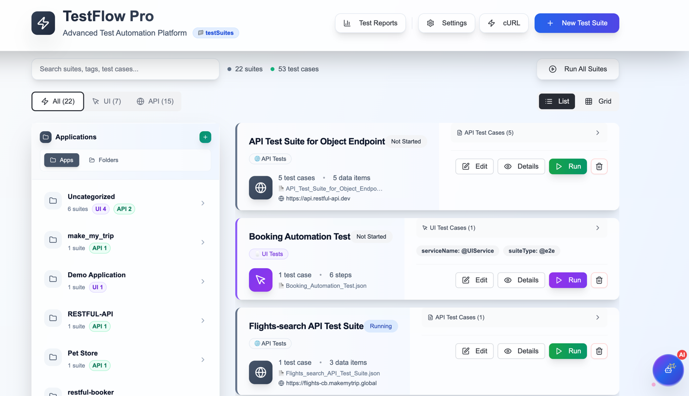
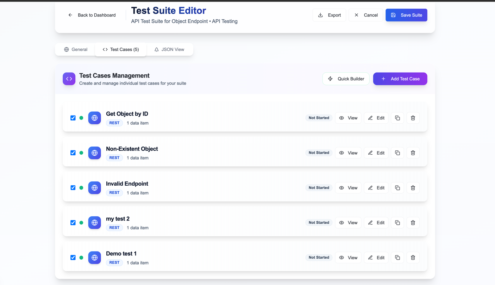
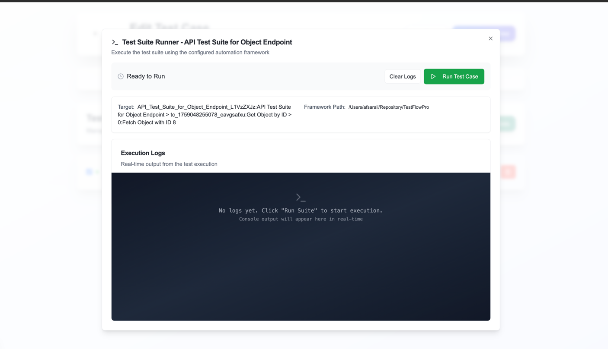

⚡ Quick Start
Get up and running with TestFlow Pro in 5 minutes:
Create Your First Test Suite
Create a JSON file in the testSuites/ directory:
{
"id": "my-first-test",
"suiteName": "My First API Test",
"applicationName": "Sample API",
"type": "API",
"baseUrl": "https://jsonplaceholder.typicode.com",
"tags": [
{ "serviceName": "@MyService" },
{ "suiteType": "@smoke" }
],
"testCases": [
{
"name": "Get User",
"type": "REST",
"testData": [
{
"name": "Fetch User 1",
"method": "GET",
"endpoint": "/users/1",
"assertions": [
{ "type": "statusCode", "expected": 200 },
{ "type": "exists", "jsonPath": "$.id" }
]
}
]
}
]
}
Run the Test
npx ts-node src/runner.ts --file="./testSuites/my-first-test.json"
View Results
npm run report:html
💻 CLI Usage
TestFlow Pro provides powerful command-line options for test execution:
Basic Execution
# Run all test suites npx ts-node src/runner.ts # Run specific test suite npx ts-node src/runner.ts --file="./testSuites/api-tests.json"
Filter by Tags
# Run smoke tests npx ts-node src/runner.ts --suiteType="@smoke" # Run tests for specific service npx ts-node src/runner.ts --serviceName="@UserService" # Combine filters npx ts-node src/runner.ts --serviceName="@UserService" --suiteType="@smoke"
Filter by Application
# Run tests for specific application npx ts-node src/runner.ts --applicationName="Bookstore Application" # Combine with test type npx ts-node src/runner.ts --applicationName="Bookstore" --testType="API"
Filter by Test Type
# Run only API tests npx ts-node src/runner.ts --testType="API" # Run only UI tests npx ts-node src/runner.ts --testType="UI"
Granular Execution
# Run specific test case npx ts-node src/runner.ts --target="suite-001:Suite Name > tc-001:Test Case Name" # Run specific test data npx ts-node src/runner.ts --target="suite-001:Suite Name > tc-001:Test Case > 0:Data Name"
Environment Configuration
# Run with QA environment ENV=qa npx ts-node src/runner.ts # Run with Production environment ENV=prod npx ts-node src/runner.ts --suiteType="@smoke"
🎨 UI Dashboard
Use the modern React-based dashboard for visual test management:
Starting the Dashboard
cd frontend/TestEditor npm run dev
Access at: http://localhost:3000

Dashboard Features
📁 Application Sidebar
Organize tests by application with hierarchical folder structure
🔍 Search & Filter
Real-time search across suite names, tags, and test cases
📊 Grid/List Views
Switch between card-based grid and table-based list views
⚡ Quick Actions
Run, edit, clone, or delete test suites with one click

📝 Creating Tests
Using the UI Editor
Click "+ New Suite"
Start creating a new test suite from the dashboard
Fill in General Information
Suite name, application, type (API/UI), base URL, and tags
Add Test Cases
Click "Add Test Case" and define test scenarios
Add Test Data
Define request details, assertions, and variable storage
Save Suite
Save the test suite as a JSON file


Importing Tests
TestFlow Pro supports importing from multiple formats:
📋 cURL Import
Paste cURL commands and convert to test suites
curl -X POST https://api.example.com/users \
-H "Content-Type: application/json" \
-d '{"name":"John"}'
📄 Swagger/OpenAPI
Import from Swagger specs (URL, file, or paste JSON/YAML)
📮 Postman Collections
Convert Postman Collection v2.1 format
🟣 Bruno Collections
Import .bru files and environment files
▶️ Running Tests
From CLI
# Run all tests npm test # Run specific suite npx ts-node src/runner.ts --file="./testSuites/suite.json" # Run with filters npx ts-node src/runner.ts --suiteType="@smoke"
From UI Dashboard
Single Suite Execution
Click the ▶️ Run button on any test suite card
Monitor Progress
View real-time execution progress in the modal
View Results
See detailed results when execution completes

Parallel Execution
Configure parallel threads for faster execution:
# In .env file PARALLEL_THREADS=4 # Or via environment variable PARALLEL_THREADS=8 npx ts-node src/runner.ts
🏷️ Filtering Tests
TestFlow Pro provides multiple ways to filter and organize tests:
Tag-Based Filtering
Define Tags in Test Suite
{
"tags": [
{ "serviceName": "@UserService" },
{ "suiteType": "@smoke" }
]
}
Run by Tags
# Run smoke tests npx ts-node src/runner.ts --suiteType="@smoke" # Run specific service npx ts-node src/runner.ts --serviceName="@UserService" # Combine tags npx ts-node src/runner.ts --serviceName="@UserService" --suiteType="@regression"
Application-Based Filtering
# Run tests for specific application npx ts-node src/runner.ts --applicationName="Bookstore Application" # Combine with test type npx ts-node src/runner.ts --applicationName="Bookstore" --testType="API"
Test Type Filtering
# Run only API tests npx ts-node src/runner.ts --testType="API" # Run only UI tests npx ts-node src/runner.ts --testType="UI"
📊 Viewing Reports
JSON Reports
Detailed JSON reports are automatically generated in the reports/ directory:
# View latest report cat reports/result-*.json | jq # List all reports ls -la reports/
HTML Reports
Generate beautiful HTML reports for easy sharing:
# Generate HTML reports npm run report:html # Open in browser open reports/*.html

Report Contents
📈 Execution Summary
Total tests, passed, failed, duration, and pass rate
✅ Test Details
Individual test results with request/response data
❌ Failure Analysis
Detailed failure information with stack traces
⏱️ Performance Metrics
Response times and execution duration
🚀 CI/CD Integration
TestFlow Pro includes ready-to-use CI/CD workflows:
GitHub Actions
Three pre-configured workflows are available:
1. Run Tests by Tags
.github/workflows/run-tests-by-tags.yml
# Manual trigger with inputs serviceName: "@UserService" suiteType: "@smoke" environment: "qa"
2. Run Tests by Application
.github/workflows/run-tests-by-application.yml
# Manual trigger with inputs applicationName: "Bookstore Application" testType: "API" environment: "qa"
3. Run Tests Matrix
.github/workflows/run-tests-matrix.yml
# Matrix execution across environments environments: "dev,qa,prod" testTypes: "API,UI" tags: "@smoke,@regression"
Azure DevOps
Azure Pipelines are also supported with similar capabilities:
- Tag-based execution
- Application-based execution
- Multi-environment matrix
- Scheduled runs
- PR validation
NPM Scripts for CI/CD
{
"scripts": {
"test": "npx ts-node src/runner.ts",
"test:smoke": "npx ts-node src/runner.ts --suiteType=@smoke",
"test:regression": "npx ts-node src/runner.ts --suiteType=@regression",
"test:api": "npx ts-node src/runner.ts --testType=API",
"test:ui": "npx ts-node src/runner.ts --testType=UI",
"report:html": "npx ts-node src/generateHtmlReport.ts"
}
}